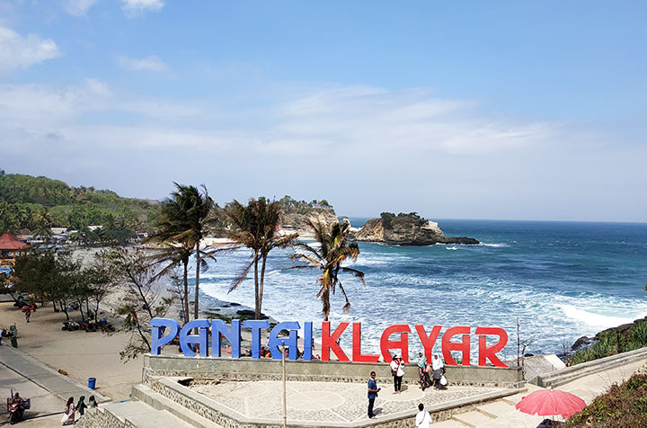
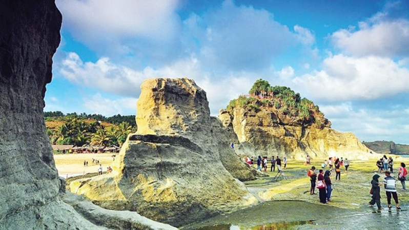
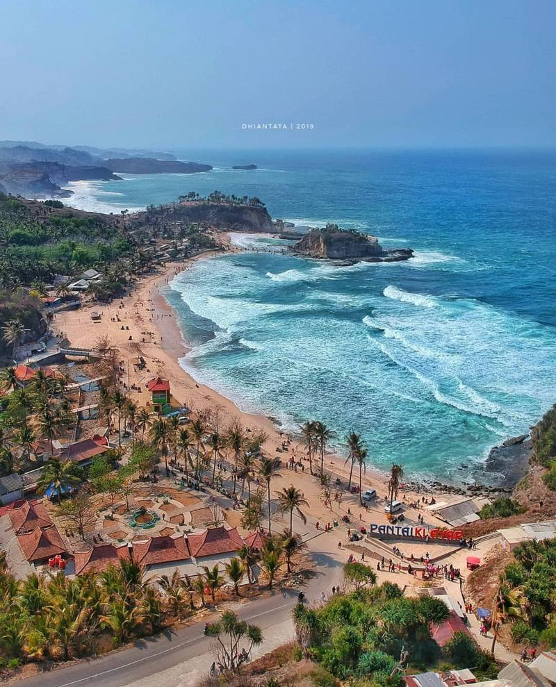
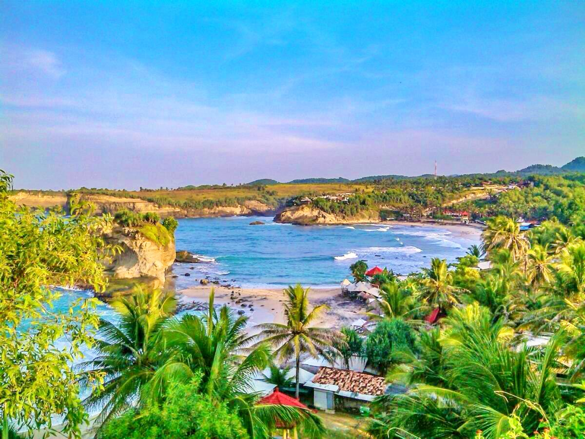

Tidak hanya dikenal dengan kota seribu Goa, Pacitan ternyata juga dikenal denga keindahan pantai-pantainya loh. Salah satunya ada Pantai Klayar yang memiliki hamparan pasir putih yang membentang dan ombak yang sejernih kristal memecah di bibir pantai, apalagi diapit dengan kedua bukit karang, Wow kebayang dong indah dan serunya. Kamu bahkan bisa naik ke bukit karang tersebut untuk menikmati pemandangan Pantai Klayar dari sebuah gardu pandang.
Lokasinya ada di Pacitan, sisi selatan Jawa Timur dan berbatasan dengan Wonogiri di Jawa Tengah. Tepatnya ada di Desa Sendang, Kecamatan Donorejo, Kabupaten Pacitan. Dari Kota pacitan jaraknya kurang lebih 40 km ke arah barat. Tahukah kamu, keindahan dan keunikan yang di Pantai Klayar ini juga menyimpan misteri loh. Keindahan pasir putih, karang raksasa mirip Sphinkx di Mesir, Seruling Laut, Air Mancur Alami, Air Terjun, dan batu karang yang indah di sini sangat luar biasa. Pantai Klayar lebih banyak dikenal oleh turis mancanegara loh daripada wisatawan domestik. Hal ini karena Pantai Klayar lebih dikenal di internet dari pada pemberitaan media offline.
Datang dan nikmatilah kebersamaan bersama keluarga atau teman-teman di Pantai Klayar yang menyimpan pesona luar biasa indah, dan jangan lupa juga untuk abadikan momen indah kalian ya. Untuk masuk kamu hanya perlu membayar Rp. 10.000 saja untuk anak-anak dan Rp. 15.000 untuk orang dewasa. Harga tiket tersebut sudah diterapkan sejak 15 Februari 2021 berasarkan Peraturan Daerah Kabupaten Pacitan Nomor 3 Tahun 2020 tentang Retribusi Tempat Rekreasi dan Olahraga. Harga tiket tersebut juga sudah berdasarkan keputusan Bupati Pacitan. Oiya, kamu juga bisa loh menyewa ATV untuk berkeliling pantai, harganya juga cukup terjangkau kok, cuma Rp. 25.000 saja sekali pulang dan pergi, atau 1 jam dengan harga Rp. 150.000, dengan begitu berwisata kamu akan jadi lebih seru ya.
Foto lain ditempat ini.
Temukan lokasi tempatnya.
Copyright © MyPacitan. All Right Reserved